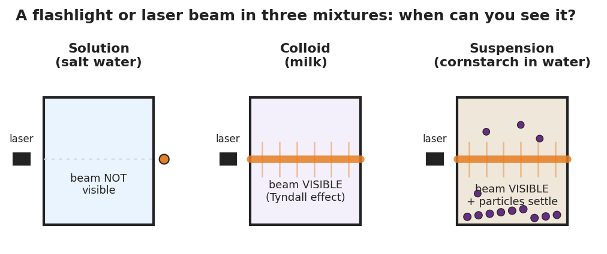

01 Phenomenon
In a darkened room, your teacher shines a laser pointer (or a flashlight) horizontally through three identical clear cups: salt water, milky water, and cornstarch stirred into water. In the salt water, the beam is invisible as it crosses the liquid — you see only the dot where it lands on the far wall. In the milky water and the cornstarch water, the whole beam lights up as a glowing shaft. Same laser, same kind of cup, same dark room — but the beam disappears in one liquid and glows in the others.
02 Driving question
Why does a flashlight beam show up in fog or milk but not in clear water?
03 Notice & wonder
| I notice… | I wonder… |
|---|---|
Turn & Talk #1: The salt water, the milky water, and the cornstarch water are all mixtures of something in water. The light beam behaves in two different ways across them. In one sentence — what do you think is different about the something mixed into each cup?
04 Initial model
Before your teacher names anything, you have three pieces of evidence about each cup: 1. Laser test — is the beam visible inside the liquid? 2. Standing test — after 5 minutes, does anything settle to the bottom? 3. Filter test — poured through a coffee filter, is anything caught?
Record what you observed (or predict) for each cup:
| Cup | Beam visible inside? | Settles on standing? | Caught by filter? |
|---|---|---|---|
| Salt water | |||
| Milky water | |||
| Cornstarch water |
What single property of the particles in each cup could explain ALL three behaviors at once? _______________________________________________
Which cup has the smallest particles? _______________ The largest? _______________
05 Investigate
Part 1 — ABCs: Sort by behavior before naming
You now have three behavior groups, each matching one cup. For each new mixture below, predict the three behaviors and decide which cup it behaves most like.
| Mixture | Beam visible? | Settles on standing? | Caught by filter? | Behaves like… (which cup?) |
|---|---|---|---|---|
| Sugar fully dissolved in water | ||||
| Muddy river water | ||||
| Gelatin (jello) re-liquefied | ||||
| Fine sand stirred into water | ||||
| Food-colored water (clear, dyed) |
Watch the trap: one mixture above has color but is still clear. Will a laser beam show up in it? Why or why not?
Part 2 — Reading the figure
Look at figures/tyndall_three_mixtures.png:

In which beaker is the laser beam invisible? _______________
In which beaker(s) is the beam visible? _______________
Which beaker shows particles settling to the bottom? _______________
The beam is visible in two beakers but particles settle in only one of them. What does that tell you about the difference between those two beakers’ particles?
06 Make it make sense
For each scenario, classify the mixture (by behavior: like the salt water, the milky water, or the cornstarch water), name the evidence, and answer the question.
A glass of clear iced tea is brightly colored but you can read print through it. You shine a laser through it and the beam stays invisible.
- This mixture behaves like the: _______________________________________________
- The evidence is: _______________________________________________
- Does the iced tea show the Tyndall effect? _______ Why? _______________________________________________
Muddy river water looks cloudy. The beam glows when you shine a laser through it, and after a few minutes a layer of sediment settles at the bottom.
- This mixture behaves like the: _______________________________________________
- The two pieces of evidence are: _______________________________________________
- If you poured it through a coffee filter, what would happen? _______________________________________________
Re-liquefied gelatin looks slightly cloudy. The beam glows when you shine a laser through it, but it never settles and passes straight through a filter.
- This mixture behaves like the: _______________________________________________
- How do its particles compare in size to the mud’s particles? _______________________________________________
- How do its particles compare in size to the dissolved sugar’s particles? _______________________________________________
07 Key vocabulary
- solution
- a homogeneous mixture whose dispersed particles are so small (dissolved to molecular or ionic size) that the mixture looks uniform, shows no Tyndall effect (a light beam passes invisibly), never settles on standing, and cannot be separated by filtering; example: salt water
- colloid
- a mixture whose dispersed particles are larger than those in a solution but still too small to settle out or be filtered; these particles are large enough to scatter light, so a colloid shows the Tyndall effect; examples: milk, fog, gelatin
- Tyndall effect
- the scattering of light by the dispersed particles of a colloid or suspension, which makes a light beam visible as it passes through; it occurs only when particles are large enough to scatter light, so it distinguishes colloids and suspensions (beam visible) from true solutions (beam invisible)
Use each term in a sentence about today’s investigation. Do not copy the definition — describe something you actually observed or sorted.
solution: _______________________________________________ _______________________________________________
colloid: _______________________________________________ _______________________________________________
Tyndall effect: _______________________________________________ _______________________________________________
08 Revise your model
Return to your Initial Model (the “one property explains all three tests” idea). Add vocabulary labels:
Label the smallest-particle cup with its name: _______________
Label the cup that scatters light but never settles: _______________
Label the cup whose particles settle and get filtered out: _______________
Write a revised appositive sentence (use dashes) defining a colloid:
A colloid — _________________________ — scatters a light beam but never settles out.
Then finish this Because / But / So sentence:
A laser beam is visible in milk but invisible in salt water because __________________________________________, but __________________________________________, so __________________________________________.
09 Exit ticket
(a) On a foggy night, a car’s headlights cast visible beams through the air, but on a clear night the beams are invisible until they hit a sign. Classify foggy air as a solution, a colloid, or a suspension, and name the evidence that decides it.
(b) You have two cloudy cups: one is muddy pond water and one is whole milk. You pour each through a coffee filter. Which cup leaves material behind on the filter, and what does that tell you about its particle size?
(c) Write one appositive sentence (use dashes) that defines the Tyndall effect.
10 Explore further
- Tyndall-effect laser test (core activity): Set up three identical clear cups or beakers — (1) salt water (a true solution), (2) milk diluted with water until faintly cloudy (a colloid), (3) cornstarch stirred into water (a suspension). In a darkened room, shine a single laser pointer or a phone flashlight horizontally through each one and have students record whether the beam is *visible inside the liquid* and whether it *passes straight through, scatters, or is blocked*. Students see the beam vanish in the salt water and glow in the milk and cornstarch. Connect every observation to the diagram in `figures/tyndall_three_mixtures.png`.
- Settle-and-filter check: Leave the three cups undisturbed for a few minutes. The cornstarch suspension separates — particles settle to the bottom; the salt solution and milk colloid stay uniform. Then pour a small sample of each through a coffee filter or filter paper: the cornstarch is caught on the filter; the salt solution and milk pass through unchanged. This gives students a *second independent line of evidence* (settling + filterability) for the same particle-size variable. For a digital option, a Javalab "scattering of light / Tyndall" simulation or a brief projected demo video can preview the live test.